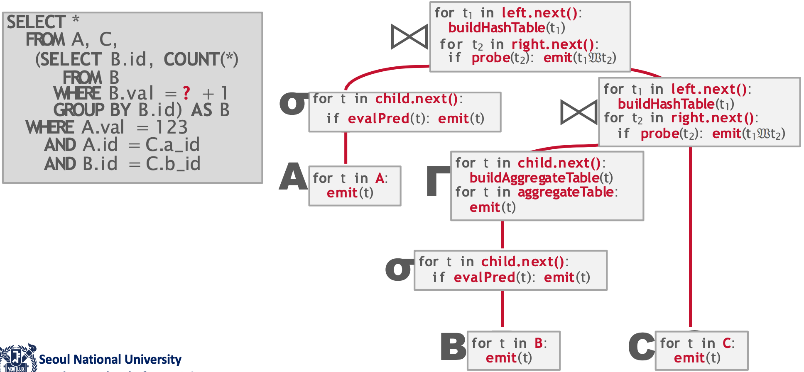
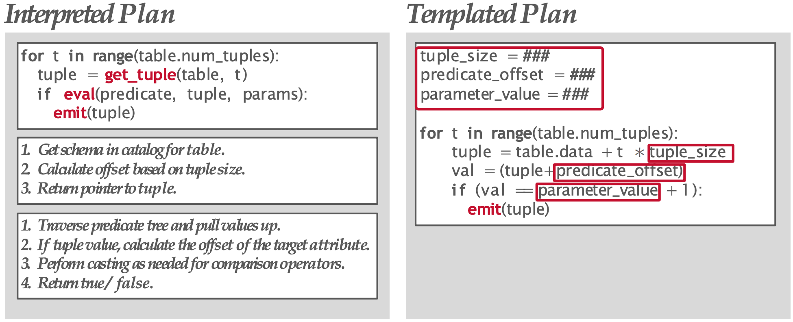
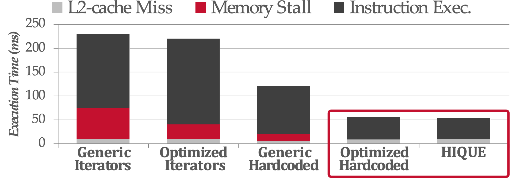
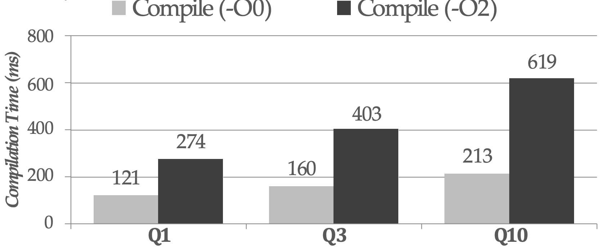
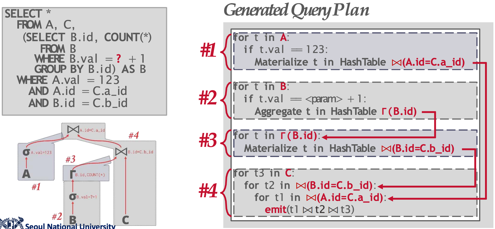

<!DOCTYPE html>
<html><head><title>15. Query Compilation and Code Generation (Bigdata and Knowledge Management Systems 2, SNU GSDS)</title><meta charSet="utf-8"/><meta name="viewport" content="width=device-width, initial-scale=1.0"/><meta property="og:title" content="15. Query Compilation and Code Generation (Bigdata and Knowledge Management Systems 2, SNU GSDS)"/><meta property="og:description" content="서울대학교 데이터사이언스대학원 정형수 교수님의 &amp;quot;빅데이터 및 지식 관리 시스템 2&amp;quot; 강의를 필기한 내용입니다. 목차 완성되지 않은 강의록 사진이랑 보충 설명을 더 넣을 예정입니다. Query Plan § Query plan 에서의 goal 은 instruction count 를 줄이고: 이것은 보통 DBMS implementation 에 영향을 받는다."/><meta property="og:image" content="https://mdg.haeramk.im/static/og-image.png"/><meta property="og:width" content="1200"/><meta property="og:height" content="675"/><link rel="icon" href="../../../../../static/icon.png"/><meta name="description" content="서울대학교 데이터사이언스대학원 정형수 교수님의 &amp;quot;빅데이터 및 지식 관리 시스템 2&amp;quot; 강의를 필기한 내용입니다. 목차 완성되지 않은 강의록 사진이랑 보충 설명을 더 넣을 예정입니다. Query Plan § Query plan 에서의 goal 은 instruction count 를 줄이고: 이것은 보통 DBMS implementation 에 영향을 받는다."/><meta name="generator" content="Quartz"/><link rel="preconnect" href="https://fonts.googleapis.com"/><link rel="preconnect" href="https://fonts.gstatic.com"/><link href="../../../../../index.css" rel="stylesheet" type="text/css" spa-preserve/><link href="https://cdn.jsdelivr.net/npm/katex@0.16.0/dist/katex.min.css" rel="stylesheet" type="text/css" spa-preserve/><link href="https://fonts.googleapis.com/css2?family=IBM Plex Mono&amp;family=Gowun Batang:wght@400;700&amp;family=Gowun Dodum:ital,wght@0,400;0,600;1,400;1,600&amp;display=swap" rel="stylesheet" type="text/css" spa-preserve/><script src="../../../../../prescript.js" type="application/javascript" spa-preserve></script><script type="application/javascript" spa-preserve>const fetchData = fetch(`../../../../../static/contentIndex.json`).then(data => data.json())</script></head><body data-slug="gardens/database/originals/bkms02.spring.2025.gsds.snu.ac.kr/lectures/15.-Query-Compilation-and-Code-Generation"><div id="quartz-root" class="page"><div id="quartz-body"><div class="left sidebar"><h1 class="page-title "><a href="../../../../..">Madison Digital Garden</a></h1><div class="spacer mobile-only"></div><div class="search "><div id="search-icon"><p>Search</p><div></div><svg tabIndex="0" aria-labelledby="title desc" role="img" xmlns="http://www.w3.org/2000/svg" viewBox="0 0 19.9 19.7"><title id="title">Search</title><desc id="desc">Search</desc><g class="search-path" fill="none"><path stroke-linecap="square" d="M18.5 18.3l-5.4-5.4"></path><circle cx="8" cy="8" r="7"></circle></g></svg></div><div id="search-container"><div id="search-space"><input autocomplete="off" id="search-bar" name="search" type="text" aria-label="Search for something" placeholder="Search for something"/><div id="results-container"></div></div></div></div><div class="darkmode "><input class="toggle" id="darkmode-toggle" type="checkbox" tabIndex="-1"/><label id="toggle-label-light" for="darkmode-toggle" tabIndex="-1"><svg xmlns="http://www.w3.org/2000/svg" xmlnsXlink="http://www.w3.org/1999/xlink" version="1.1" id="dayIcon" x="0px" y="0px" viewBox="0 0 35 35" style="enable-background:new 0 0 35 35;" xmlSpace="preserve"><title>Light mode</title><path d="M6,17.5C6,16.672,5.328,16,4.5,16h-3C0.672,16,0,16.672,0,17.5    S0.672,19,1.5,19h3C5.328,19,6,18.328,6,17.5z M7.5,26c-0.414,0-0.789,0.168-1.061,0.439l-2,2C4.168,28.711,4,29.086,4,29.5    C4,30.328,4.671,31,5.5,31c0.414,0,0.789-0.168,1.06-0.44l2-2C8.832,28.289,9,27.914,9,27.5C9,26.672,8.329,26,7.5,26z M17.5,6    C18.329,6,19,5.328,19,4.5v-3C19,0.672,18.329,0,17.5,0S16,0.672,16,1.5v3C16,5.328,16.671,6,17.5,6z M27.5,9    c0.414,0,0.789-0.168,1.06-0.439l2-2C30.832,6.289,31,5.914,31,5.5C31,4.672,30.329,4,29.5,4c-0.414,0-0.789,0.168-1.061,0.44    l-2,2C26.168,6.711,26,7.086,26,7.5C26,8.328,26.671,9,27.5,9z M6.439,8.561C6.711,8.832,7.086,9,7.5,9C8.328,9,9,8.328,9,7.5    c0-0.414-0.168-0.789-0.439-1.061l-2-2C6.289,4.168,5.914,4,5.5,4C4.672,4,4,4.672,4,5.5c0,0.414,0.168,0.789,0.439,1.06    L6.439,8.561z M33.5,16h-3c-0.828,0-1.5,0.672-1.5,1.5s0.672,1.5,1.5,1.5h3c0.828,0,1.5-0.672,1.5-1.5S34.328,16,33.5,16z     M28.561,26.439C28.289,26.168,27.914,26,27.5,26c-0.828,0-1.5,0.672-1.5,1.5c0,0.414,0.168,0.789,0.439,1.06l2,2    C28.711,30.832,29.086,31,29.5,31c0.828,0,1.5-0.672,1.5-1.5c0-0.414-0.168-0.789-0.439-1.061L28.561,26.439z M17.5,29    c-0.829,0-1.5,0.672-1.5,1.5v3c0,0.828,0.671,1.5,1.5,1.5s1.5-0.672,1.5-1.5v-3C19,29.672,18.329,29,17.5,29z M17.5,7    C11.71,7,7,11.71,7,17.5S11.71,28,17.5,28S28,23.29,28,17.5S23.29,7,17.5,7z M17.5,25c-4.136,0-7.5-3.364-7.5-7.5    c0-4.136,3.364-7.5,7.5-7.5c4.136,0,7.5,3.364,7.5,7.5C25,21.636,21.636,25,17.5,25z"></path></svg></label><label id="toggle-label-dark" for="darkmode-toggle" tabIndex="-1"><svg xmlns="http://www.w3.org/2000/svg" xmlnsXlink="http://www.w3.org/1999/xlink" version="1.1" id="nightIcon" x="0px" y="0px" viewBox="0 0 100 100" style="enable-background='new 0 0 100 100'" xmlSpace="preserve"><title>Dark mode</title><path d="M96.76,66.458c-0.853-0.852-2.15-1.064-3.23-0.534c-6.063,2.991-12.858,4.571-19.655,4.571  C62.022,70.495,50.88,65.88,42.5,57.5C29.043,44.043,25.658,23.536,34.076,6.47c0.532-1.08,0.318-2.379-0.534-3.23  c-0.851-0.852-2.15-1.064-3.23-0.534c-4.918,2.427-9.375,5.619-13.246,9.491c-9.447,9.447-14.65,22.008-14.65,35.369  c0,13.36,5.203,25.921,14.65,35.368s22.008,14.65,35.368,14.65c13.361,0,25.921-5.203,35.369-14.65  c3.872-3.871,7.064-8.328,9.491-13.246C97.826,68.608,97.611,67.309,96.76,66.458z"></path></svg></label></div></div><div class="center"><div class="page-header"><div class="popover-hint"><h1 class="article-title ">15. Query Compilation and Code Generation (Bigdata and Knowledge Management Systems 2, SNU GSDS)</h1><p class="content-meta ">Apr 23, 2025, 9 min read</p><ul class="tags "><li><a href="../../../../../tags/database" class="internal tag-link">#database</a></li><li><a href="../../../../../tags/originals" class="internal tag-link">#originals</a></li><li><a href="../../../../../tags/snu-bkms25s" class="internal tag-link">#snu-bkms25s</a></li></ul></div></div><article class="popover-hint"><blockquote class="callout" data-callout="info">
<div class="callout-title">
                  <div class="callout-icon"><svg xmlns="http://www.w3.org/2000/svg" width="100%" height="100%" viewBox="0 0 24 24" fill="none" stroke="currentColor" stroke-width="2" stroke-linecap="round" stroke-linejoin="round"><circle cx="12" cy="12" r="10"></circle><line x1="12" y1="16" x2="12" y2="12"></line><line x1="12" y1="8" x2="12.01" y2="8"></line></svg></div>
                  <div class="callout-title-inner"><p>서울대학교 데이터사이언스대학원 정형수 교수님의 &quot;빅데이터 및 지식 관리 시스템 2&quot; 강의를 필기한 내용입니다. </p></div>
                  
                </div>
<ul>
<li><a href="../../../../../gardens/database/originals/bkms02.spring.2025.gsds.snu.ac.kr/(SNU-GSDS)-Bigdata-and-Knowledge-Management-Systems-2" class="internal" data-slug="gardens/database/originals/bkms02.spring.2025.gsds.snu.ac.kr/(SNU-GSDS)-Bigdata-and-Knowledge-Management-Systems-2">목차</a></li>
</ul>
</blockquote>
<blockquote class="callout" data-callout="warning">
<div class="callout-title">
                  <div class="callout-icon"><svg xmlns="http://www.w3.org/2000/svg" width="100%" height="100%" viewBox="0 0 24 24" fill="none" stroke="currentColor" stroke-width="2" stroke-linecap="round" stroke-linejoin="round"><path d="m21.73 18-8-14a2 2 0 0 0-3.48 0l-8 14A2 2 0 0 0 4 21h16a2 2 0 0 0 1.73-3Z"></path><line x1="12" y1="9" x2="12" y2="13"></line><line x1="12" y1="17" x2="12.01" y2="17"></line></svg></div>
                  <div class="callout-title-inner"><p>완성되지 않은 강의록 </p></div>
                  
                </div>
<ul>
<li>사진이랑 보충 설명을 더 넣을 예정입니다.</li>
</ul>
</blockquote>
<h2 id="query-plan">Query Plan<a aria-hidden="true" tabindex="-1" href="#query-plan" class="internal"> §</a></h2>
<ul>
<li>Query plan 에서의 goal 은
<ul>
<li>instruction count 를 줄이고: 이것은 보통 DBMS implementation 에 영향을 받는다.</li>
<li>cycle per instruction 도 줄이고</li>
<li>parallel 하게 하고</li>
<li>당연한 얘기지만, 10배 빨라지기 위해서는 instruction 의 양을 90% 줄여아 한다.</li>
</ul>
</li>
</ul>
<h2 id="interprete-compile-jit">Interprete, Compile, JIT<a aria-hidden="true" tabindex="-1" href="#interprete-compile-jit" class="internal"> §</a></h2>
<ul>
<li><em>Interpretation</em>: 코드를 그때그때 parsing 해서 그에 맞는 pre-implemented function 을 call 하는 것.</li>
<li><em>Compilation</em>: Native code (executable) 로 바꾸는 것.</li>
<li><em>Transpilation</em> (<em>Source-to-source compilation</em>): 다른 언어로 바꾸는 것.</li>
<li><em>Just-In-TIme</em> (<em>JIT</em>): 그때그때 compilation 하면서 native query processing code 전체 혹은 일부를 생성하는 것.</li>
</ul>
<h2 id="pull-based-execution">Pull-based Execution<a aria-hidden="true" tabindex="-1" href="#pull-based-execution" class="internal"> §</a></h2>
<p></p>
<ul>
<li>Pull-based, volcano model 에서는
<ul>
<li>모든 node 는 <code>emit()</code> 과 <code>getNext()</code> 를 구현하고 있고, 상위 node 에서 <code>getNext()</code> 를 이용해 하위 node 에서 <code>emit()</code> 으로 뱉은 데이터를 pull 해온다.</li>
<li>Predicate 에서는 <code>pred()</code> 로 검사를 한다.</li>
<li>Join 에서는 <code>probe()</code> 로 hashtable 등에서 match 되는지 확인한다.
<ul>
<li>Join 에서 만약 hashtable 을 사용하기로 했다면, probe 전에 한쪽의 table 로 <code>build_hash_table()</code> 로 만든다.</li>
</ul>
</li>
</ul>
</li>
<li>근데 Predicate evaluation (<code>pred()</code>) 은 절대 가볍지 않다.
<ul>
<li>Input 으로 들어온 predicate 의 피연산자에 대해, 어떤 type 인지를 catalog 를 통해 확인하고 이 type 이 이 연산자로 연산이 가능한가 확인하는 등등의 작업을 해야 하기 때문이다.</li>
<li>근데 native code 에서 predicate 을 처리하는 것은 이것보다는 훨씬 간단하기 때문에 이런것들을 native code 로 generate 하여 처리하는 것이 더 효율적이다.</li>
</ul>
</li>
</ul>
<h2 id="query-transpilation-and-jit">Query Transpilation and JIT<a aria-hidden="true" tabindex="-1" href="#query-transpilation-and-jit" class="internal"> §</a></h2>
<ul>
<li>위에서 말한 대로, query execution 을 할 때 predicate evaluation 에서 interprete 방식을 사용하는 것보다 native code 로 compile 해서 실행하는 것이 더 빠르다.</li>
<li>그래서, query plan 에 대해 이놈을 실행할 C, C++ 코드를 동적으로 생성하는 <em>Query Transpilation</em> 접근 방식을 취하거나, 이놈을 실행할 <a href="../../../../../gardens/pl/drafts/Intermediate-Representation,-IR-(PL)" class="internal" data-slug="gardens/pl/drafts/Intermediate-Representation,-IR-(PL)">IR</a> 을 동적으로 생성하는 <em>Query JIT Compilation</em> 방식을 취하게 된다.
<ul>
<li>가령, DBMS 에서는 SQL query 를 parsing 하여 <a href="../../../../../gardens/pl/drafts/Abstract-Syntax-Tree,-AST-(PL)" class="internal" data-slug="gardens/pl/drafts/Abstract-Syntax-Tree,-AST-(PL)">AST</a> 를 바꾼 뒤 미리 준비된 각 AST node 에 대응되는 C, C++ (Transpilation 을 한다고 했을 때) 혹은 LLVM (LLVM JIT Compilation 을 한다고 했을 때) code block 으로 이것을 다 치환한다.</li>
<li>참고로 Oracle 에서는 Proc-C 라는 Domain Specific Language (DSL) 로 바꾼 뒤 native code 를 생성한다고 한다.</li>
</ul>
</li>
<li>그 다음에 이것을 compile 해서 shared library (<code>.so</code> 파일) 형태의 native code 로 바꾸게 되고, 이것을 동적으로 load 해서 실행하게 된다.</li>
</ul>
<h2 id="hique-icde10"><a href="https://www.computer.org/csdl/proceedings-article/icde/2010/05447892/12OmNy4IEYg" class="external">HIQUE (ICDE’10)</a><a aria-hidden="true" tabindex="-1" href="#hique-icde10" class="internal"> §</a></h2>
<p></p>
<ul>
<li>Transpilation 접근법이 처음 등장한 것이 이 Hique 논문 (Holistic code generation, ICDE’10) 이다.</li>
<li>이 논문에서는 모든 query plan node 대해 C, C++ 로 변환해주는 코드를 짰다.
<ul>
<li>이것을 <em>Templated Plan</em> 이라고 하는데,</li>
<li>위 그림에서 보이는 것 처럼 일단 Template code 가 있고 여기에서 변수들은 전부 macro definition 으로 주입받는다.</li>
<li>가령 catalog 에 있는 tuple size 나 user 가 넘겨주는 parameter value 같은 것들을 macro definition 으로 만들어서 이 template 에 붙여주면 정상적으로 작동하는 C, C++ code 가 되는 것.</li>
</ul>
</li>
<li>실행시에는 위에서 말한 것과 유사하게 compile 한 다음 shared lib 을 load 하는 방식으로 작동한다.</li>
<li>추가적으로 접근해야되는 데이터들을 array access 형태로 만들어서 compilation 에 SIMD instruction 으로 compile 되도록 하는 최적화도 되어 있다고 한다.</li>
</ul>
<p></p>
<ul>
<li>그 결과가 위와 같다.
<ul>
<li><em>Generic Iterator</em>: 기존의 interprete 방식
<ul>
<li>즉, query 에 사용되는 data 가 어떤 type 인지 모른다고 가정하고, query 실행시에 catalog 를 보면서 확인하며 interprete 방식으로 실행하는 것.</li>
</ul>
</li>
<li><em>Optimized Iterator</em>: 위의 generic iterator 와 동일한데, type 정보같은 것들을 미리 주입하는 (예를 들어 int type 만 사용한다고 가정하고 type checking 같은것들을 전부 hard-coded 로 바꿔버린) 등의 조작을 한 것.</li>
<li><em>Generic Handcoded</em>: 사람이 query execution code 를 직접 짜되, 모든 type 에 대응할 수 있도록 generic 하게 짠 것.</li>
<li><em>Optimized Handcoded</em>: 위의 generic handcoded 와 동일한데, 마찬가지로 type 정보는 hardcoded 해놓는 등의 최적화를 한 것.</li>
</ul>
</li>
<li>보면 HIQUE 와 optimized handcoded 와 유사한 성능으로 가장 좋은 성능을 보여주는 것을 알 수 있다.
<ul>
<li>이 말은, 이런 transpilation 이 효과적이라는 것과 HIQUE 가 정확하게 구현되어 있다는 의미이다.</li>
<li>보다시피 여기서 가장 성능이 많이 좋아지는 부분은 intruction exec (predicate evaluation) 이다.</li>
</ul>
</li>
</ul>
<p></p>
<ul>
<li>근데 문제는 실제 query execution time 보다 query compile 하는데에 더 오래걸리는 문제가 있다.
<ul>
<li>즉, C/C++ code parsing overhead 가 있는 것.</li>
<li>이 parsing overhead 를 줄이기 위해 C code 가 아닌 IR 로 하자는 게 JIT compilation 접근이다.</li>
</ul>
</li>
</ul>
<h2 id="hyper-vldb11"><a href="https://www.vldb.org/pvldb/vol4/p539-neumann.pdf" class="external">HyPer (VLDB’11)</a><a aria-hidden="true" tabindex="-1" href="#hyper-vldb11" class="internal"> §</a></h2>
<ul>
<li>HyPer 가 이 solution 의 이름은 아니고 기존의 Thomas Neumann 교수님의 <a href="../../../../../gardens/database/originals/bkms02.spring.2025.gsds.snu.ac.kr/lectures/07.-Multi-Version-Concurrency-Control" class="internal" data-slug="gardens/database/originals/bkms02.spring.2025.gsds.snu.ac.kr/lectures/07.-Multi-Version-Concurrency-Control">HyPer</a> 에 접목을 한것이다.</li>
<li>여기서는 query 를 IR 로 바꾸고, IR 을 machine code 로 바꾸어서 Hique 에서의 parsing overhead 를 없앴다.</li>
</ul>
<p></p>
<ul>
<li>또한, push-based execution 으로 pipelining 을 해서 성능을 높였다.
<ul>
<li>기존의 Pull-based execution 에서는 getNext() 를 호출하면 다음 node 에서 exec 을 시작하는 것이었는데,</li>
<li>Push-based 에서는 각 operator 들이 계속해서 operation 들을 수행하고 있고, 그 결과를 materialize 시켜 놓으며 쌓아두면 상위 node 가 그것들을 필요할 때마다 가져가는 형태</li>
<li>따라서 모든 operator 들이 계속 돌고 있고, pipelining 이 된다.
<ul>
<li>즉, intra-query, inter-operator parallelism 이다.</li>
</ul>
</li>
</ul>
</li>
</ul>
<h2 id="real-world-implementation">Real-world Implementation<a aria-hidden="true" tabindex="-1" href="#real-world-implementation" class="internal"> §</a></h2>
<ul>
<li><em>Stored proc</em>: 어차피 application 이 DBMS 에 날리는 query 는 정해져있기 떄문에 이런 query 는 미리 procedure 로 만들어서 parsing overhead 를 줄인다.
<ul>
<li>미리 IR 로 만들어놓는것</li>
<li>그래서 application 에서는 실제로 SQL 이 아닌 parameter 만 보내기도 한다.</li>
</ul>
</li>
<li><em>AWS Redshift</em> 같은곳에서는 query fragment 들을 C++ code 로 바꿔둔 뒤 local caching 하여 이 바꿔둔 template code 들을 재활용한다.
<ul>
<li>또한, 만약에 local cache 에 없다면 다른 사람들이 query planning 할 때 생성했던 template code 들을 global hashtable 로 만들어놓아서 이후 query 가 들어왔을 때 이 hashtable 을 보고 있으면 바로 그 template code 를 사용하기도 한다.</li>
</ul>
</li>
<li><em>TUM UMBRA</em>: 여기서는 custom IR 을 사용해서 더 빠르게 했다고 한다.</li>
<li>Singlestore: 모든 들어온 query 를 parameterize 해서 유사한 query 가 들어오면 이 parameterized 한 것을 바로 사용하는 방식을 취한다고 한다.</li>
</ul></article></div><div class="right sidebar"><div class="graph "><h3>Graph View</h3><div class="graph-outer"><div id="graph-container" data-cfg="{&quot;drag&quot;:true,&quot;zoom&quot;:true,&quot;depth&quot;:1,&quot;scale&quot;:1.1,&quot;repelForce&quot;:0.5,&quot;centerForce&quot;:0.3,&quot;linkDistance&quot;:30,&quot;fontSize&quot;:0.6,&quot;opacityScale&quot;:1,&quot;showTags&quot;:true,&quot;removeTags&quot;:[]}"></div><svg version="1.1" id="global-graph-icon" xmlns="http://www.w3.org/2000/svg" xmlnsXlink="http://www.w3.org/1999/xlink" x="0px" y="0px" viewBox="0 0 55 55" fill="currentColor" xmlSpace="preserve"><path d="M49,0c-3.309,0-6,2.691-6,6c0,1.035,0.263,2.009,0.726,2.86l-9.829,9.829C32.542,17.634,30.846,17,29,17
	s-3.542,0.634-4.898,1.688l-7.669-7.669C16.785,10.424,17,9.74,17,9c0-2.206-1.794-4-4-4S9,6.794,9,9s1.794,4,4,4
	c0.74,0,1.424-0.215,2.019-0.567l7.669,7.669C21.634,21.458,21,23.154,21,25s0.634,3.542,1.688,4.897L10.024,42.562
	C8.958,41.595,7.549,41,6,41c-3.309,0-6,2.691-6,6s2.691,6,6,6s6-2.691,6-6c0-1.035-0.263-2.009-0.726-2.86l12.829-12.829
	c1.106,0.86,2.44,1.436,3.898,1.619v10.16c-2.833,0.478-5,2.942-5,5.91c0,3.309,2.691,6,6,6s6-2.691,6-6c0-2.967-2.167-5.431-5-5.91
	v-10.16c1.458-0.183,2.792-0.759,3.898-1.619l7.669,7.669C41.215,39.576,41,40.26,41,41c0,2.206,1.794,4,4,4s4-1.794,4-4
	s-1.794-4-4-4c-0.74,0-1.424,0.215-2.019,0.567l-7.669-7.669C36.366,28.542,37,26.846,37,25s-0.634-3.542-1.688-4.897l9.665-9.665
	C46.042,11.405,47.451,12,49,12c3.309,0,6-2.691,6-6S52.309,0,49,0z M11,9c0-1.103,0.897-2,2-2s2,0.897,2,2s-0.897,2-2,2
	S11,10.103,11,9z M6,51c-2.206,0-4-1.794-4-4s1.794-4,4-4s4,1.794,4,4S8.206,51,6,51z M33,49c0,2.206-1.794,4-4,4s-4-1.794-4-4
	s1.794-4,4-4S33,46.794,33,49z M29,31c-3.309,0-6-2.691-6-6s2.691-6,6-6s6,2.691,6,6S32.309,31,29,31z M47,41c0,1.103-0.897,2-2,2
	s-2-0.897-2-2s0.897-2,2-2S47,39.897,47,41z M49,10c-2.206,0-4-1.794-4-4s1.794-4,4-4s4,1.794,4,4S51.206,10,49,10z"></path></svg></div><div id="global-graph-outer"><div id="global-graph-container" data-cfg="{&quot;drag&quot;:true,&quot;zoom&quot;:true,&quot;depth&quot;:-1,&quot;scale&quot;:0.9,&quot;repelForce&quot;:0.5,&quot;centerForce&quot;:0.3,&quot;linkDistance&quot;:30,&quot;fontSize&quot;:0.6,&quot;opacityScale&quot;:1,&quot;showTags&quot;:true,&quot;removeTags&quot;:[]}"></div></div></div><div class="toc desktop-only"><button type="button" id="toc"><h3>Table of Contents</h3><svg xmlns="http://www.w3.org/2000/svg" width="24" height="24" viewBox="0 0 24 24" fill="none" stroke="currentColor" stroke-width="2" stroke-linecap="round" stroke-linejoin="round" class="fold"><polyline points="6 9 12 15 18 9"></polyline></svg></button><div id="toc-content"><ul class="overflow"><li class="depth-0"><a href="#query-plan" data-for="query-plan">Query Plan</a></li><li class="depth-0"><a href="#interprete-compile-jit" data-for="interprete-compile-jit">Interprete, Compile, JIT</a></li><li class="depth-0"><a href="#pull-based-execution" data-for="pull-based-execution">Pull-based Execution</a></li><li class="depth-0"><a href="#query-transpilation-and-jit" data-for="query-transpilation-and-jit">Query Transpilation and JIT</a></li><li class="depth-0"><a href="#hique-icde10" data-for="hique-icde10">HIQUE (ICDE'10)</a></li><li class="depth-0"><a href="#hyper-vldb11" data-for="hyper-vldb11">HyPer (VLDB'11)</a></li><li class="depth-0"><a href="#real-world-implementation" data-for="real-world-implementation">Real-world Implementation</a></li></ul></div></div><div class="backlinks "><h3>Backlinks</h3><ul class="overflow"><li><a href="../../../../../gardens/database/originals/bkms02.spring.2025.gsds.snu.ac.kr/(SNU-GSDS)-Bigdata-and-Knowledge-Management-Systems-2" class="internal">(SNU GSDS) Bigdata and Knowledge Management Systems 2</a></li></ul></div></div></div><footer class><hr/><p>Created with <a href="https://quartz.jzhao.xyz/">Quartz v4.1.0</a>, © 2025</p><ul><li><a href="https://github.com/haeramkeem">GitHub</a></li><li><a href="https://www.linkedin.com/in/haeram-kim-277404220">LinkedIn</a></li><li><a href="mailto:haeram.kim1@gmail.com">Email</a></li></ul></footer></div></body><script type="application/javascript">// quartz/components/scripts/quartz/components/scripts/callout.inline.ts
function toggleCallout() {
  const outerBlock = this.parentElement;
  outerBlock.classList.toggle(`is-collapsed`);
  const collapsed = outerBlock.classList.contains(`is-collapsed`);
  const height = collapsed ? this.scrollHeight : outerBlock.scrollHeight;
  outerBlock.style.maxHeight = height + `px`;
  let current = outerBlock;
  let parent = outerBlock.parentElement;
  while (parent) {
    if (!parent.classList.contains(`callout`)) {
      return;
    }
    const collapsed2 = parent.classList.contains(`is-collapsed`);
    const height2 = collapsed2 ? parent.scrollHeight : parent.scrollHeight + current.scrollHeight;
    parent.style.maxHeight = height2 + `px`;
    current = parent;
    parent = parent.parentElement;
  }
}
function setupCallout() {
  const collapsible = document.getElementsByClassName(
    `callout is-collapsible`
  );
  for (const div of collapsible) {
    const title = div.firstElementChild;
    if (title) {
      title.removeEventListener(`click`, toggleCallout);
      title.addEventListener(`click`, toggleCallout);
      const collapsed = div.classList.contains(`is-collapsed`);
      const height = collapsed ? title.scrollHeight : div.scrollHeight;
      div.style.maxHeight = height + `px`;
    }
  }
}
document.addEventListener(`nav`, setupCallout);
window.addEventListener(`resize`, setupCallout);
</script><script type="module">
          import mermaid from 'https://cdn.jsdelivr.net/npm/mermaid/dist/mermaid.esm.min.mjs';
          const darkMode = document.documentElement.getAttribute('saved-theme') === 'dark'
          mermaid.initialize({
            startOnLoad: false,
            securityLevel: 'loose',
            theme: darkMode ? 'dark' : 'default'
          });
          document.addEventListener('nav', async () => {
            await mermaid.run({
              querySelector: '.mermaid'
            })
          });
          </script><script src="https://cdn.jsdelivr.net/npm/katex@0.16.7/dist/contrib/copy-tex.min.js" type="application/javascript"></script><script src="https://www.googletagmanager.com/gtag/js?id=G-N68CCP1QHG" type="application/javascript"></script><script src="../../../../../postscript.js" type="module"></script></html>